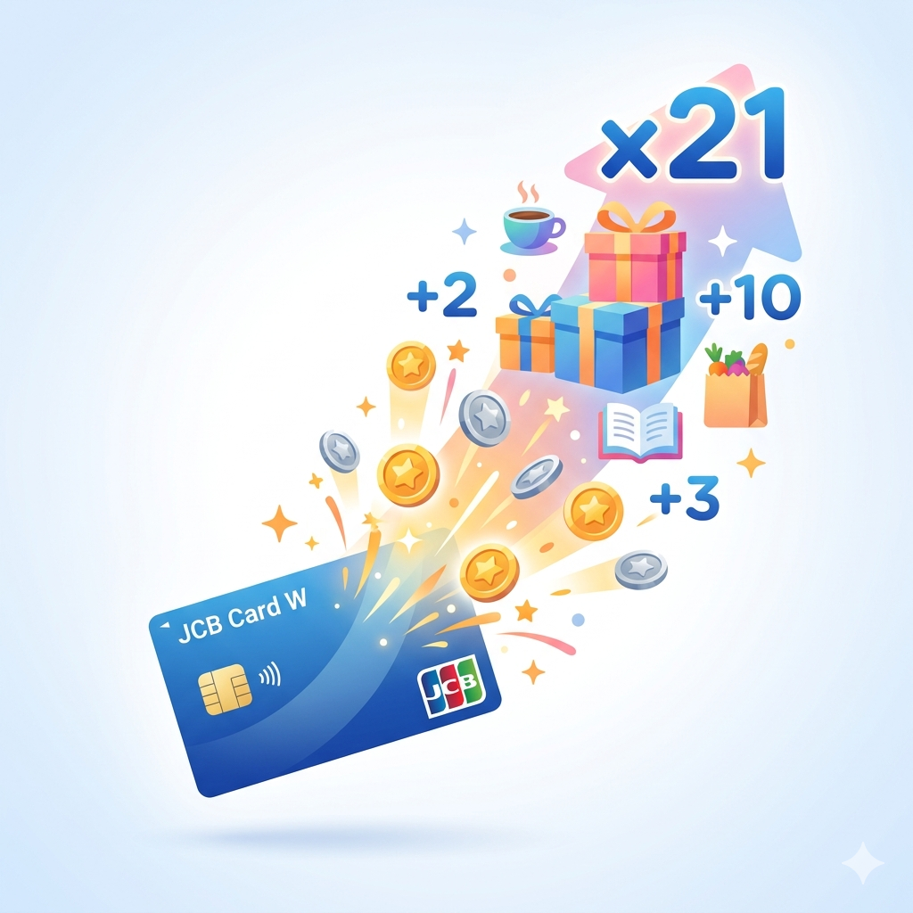
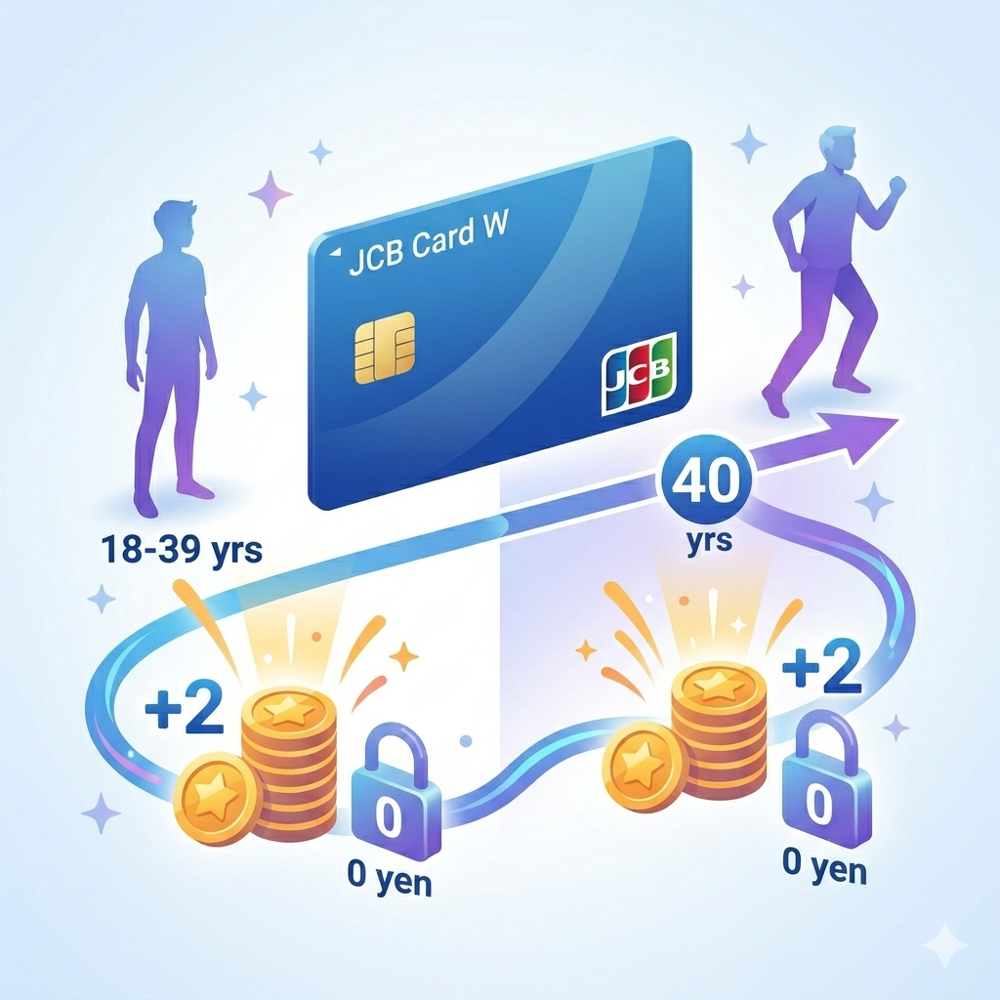
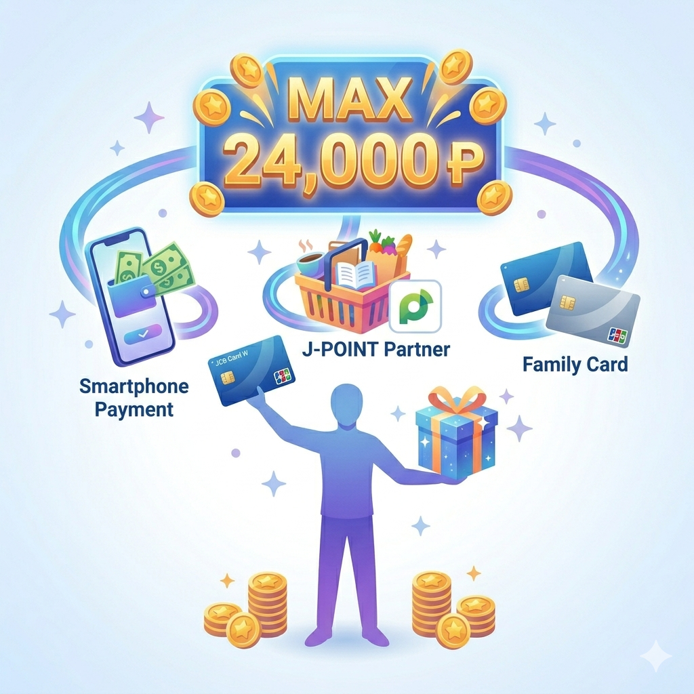
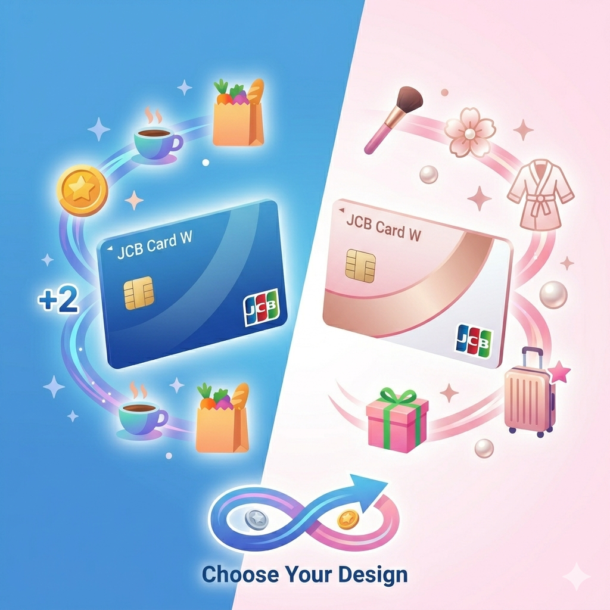
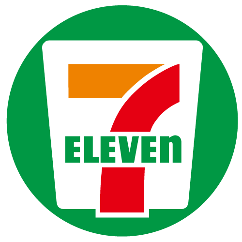
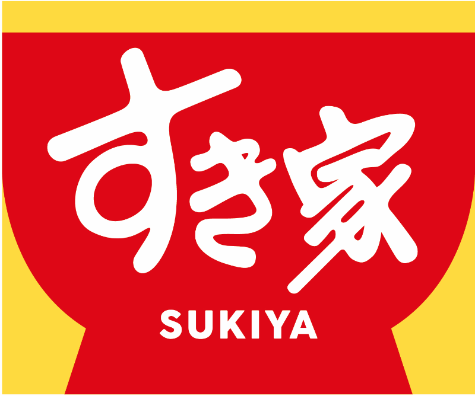

ポイント
2倍
ダブルで得（徳）積む
JCBカードW
毎日の支払いが、
ぜんぶポイントに
なって返ってくる。
年会費ずっと無料。常にポイント2倍。
18〜39歳のうちに持つべきカードが、ここにある。
SCROLL
あなたは今、どんな状態ですか？
まだよく知らない
JCBカードWってどんなカード？選ばれる理由を見る
›
興味はある、詳しく知りたい
ポイントの貯め方・使い方を具体的に見る
›
申し込みを検討中
自分がいくらくらい得するか確認する
›
SECTION 01 — なぜ選ばれるか
JCBカードWが
選ばれる、6つの理由
年会費無料なのに、業界トップクラスの還元率。18〜39歳限定だからできた、とっておきのカードです。

使うたびに、ポイントがどんどん貯まる
通常カードの常時2倍のポイントが付く。スタバ・Amazon・セブンなどJ-POINTパートナーで使えば、さらに倍率アップして最大21倍に。同じお金を使うなら、得しないと損。
最大21倍
スマートに、安全に使える
カード番号が表面に書かれていないナンバーレスで、番号盗難のリスクゼロ。タッチ決済・パスキー認証・使いすぎアラートまで、スマートな使い方に全対応。申込後最短5分でオンライン利用開始。

40歳になっても、ずっと無料・ずっと2倍
「18〜39歳限定」と聞くと、40歳で損しそう……と思いませんか？大丈夫です。40歳以降も年会費ゼロ・ポイント2倍がそのまま続きます。一生持ち続けられるカードです。
改札をカードでタッチするだけ
新幹線・在来線・地下鉄でクレジットカードのまま乗車できる。Suicaにチャージする手間なし。そのままポイントも貯まるので、毎日の通勤・通学がお得になる。

今だけ：入会するだけで最大24,000円相当もらえる
新規入会キャンペーンで、スマホ決済・J-POINTパートナー利用・家族カードの3つを組み合わせると最大24,000円相当のポイントが手に入る。申し込まないほうが損かもしれない。

デザインも選べる。女性向け特典付きのW PlusLも
スタンダードなカードWのほか、女性向け追加特典（医療・美容・旅行の優待、LINEギフトなど）が加わったJCBカードW PlusLも選択可能。ホワイトとピンクの2デザインから選べる。
SECTION 02 — 貯め方・使い方
ポイントって、
実際どうやって使うの？
難しいことは何もありません。使えば自然に貯まって、いつものお店でそのまま使える。そんなシンプルな仕組みです。
カードで払う
いつもの
お買い物
お買い物
→
自動でたまる
200円→1pt
常時2倍
常時2倍
→
そのまま使える
160万ヵ所
1pt=1円
1pt=1円
よく使うお店で、ポイントがぐっと増える
スターバックス
21倍
Amazon
4倍

セブン-イレブン
4倍
マクドナルド
21倍

すき家
21倍
Disney+
21倍
他にもHulu・U-NEXTなどサブスク系も多数対象 ›
MyJCB Payで、コンビニ・飲食・宿泊で1pt=1円
アプリを設定するだけで、全国160万ヵ所以上の加盟店でポイントがそのまま使える。わざわざ交換しなくてOK。コンビニのレジでも「ポイント使います」のひと声だけ。
Amazon.co.jpでの買い物にもそのまま使える
Amazonの支払い画面でJ-POINTを充当できる。Amazonをよく使う人は、貯まったポイントがそのままAmazonの割引になるイメージ。
ディズニーホテルの宿泊券にも交換できる
ポイント交換先としてディズニーホテルの宿泊券が用意されている。推し活・旅行の費用にポイントを充てる使い方も人気。
JCBカードW PlusL — 女性向け追加特典
女性疾病保険が付帯
乳がん・子宮がんなど女性特有の病気に備えられる保険が自動付帯。カードを持つだけで安心が一つ増える。
旅行傷害保険も付帯
国内外の旅行中に事故・ケガがあっても補償。推し活遠征や旅行が多い人にも安心。
LINEギフトなど女性向け優待
美容・健康・エンタメ系の優待特典が豊富。毎日の生活にちょっとしたご褒美が増える。
SECTION 03 — 自分の場合を試算
あなたの使い方で、
いくら戻ってくる？
「なんとなくお得そう」を、数字で確認してみましょう。月3万円台の日常使いでも、これだけ差が出ます。
月間利用例（38,000円の場合）
※ J-POINTパートナーへの登録が必要です。倍率は変動する場合があります。
スターバックス
月5,000円
21倍
525 pt
Amazon
月20,000円
3倍
300 pt
セブン-イレブン
月2,000円
4倍
40 pt
Disney+（サブスク）
月2,000円
21倍
210 pt
その他の日常利用
月9,000円
2倍
90 pt
月間獲得合計
1,125 pt
年間換算
約13,500
円相当がポイントで戻る
カードの「種類」と「使い方」でここまで差が出る
| カードの使い方 | 倍率 | 還元率 | 1,000円 使ったら |
|---|---|---|---|
| 一般的なクレカ | 1倍 | 0.5% | 5pt |
| JCBカードW（通常） | 2倍 | 1.0% | 10pt |
| JCBカードW ＋パートナー店 |
最大21倍 | 最大10.5% | 最大105pt |
投資（クレカ積立）でもポイントが貯まる
対応証券会社でクレカ積立を設定すると、積立金額に応じて最大0.5%還元。日常の買い物ポイントと合わせれば、さらにお得に。
JCB CARD W — 無料で申し込む
今すぐ申し込む（年会費無料）
›
最短5分でオンライン利用開始 ｜ ナンバーレス対応
SECTION 04 — JCBって、どんなブランド？
「安心して使える」には、
ちゃんと理由がある
世界で選ばれる、日本唯一の国際カードブランド、JCB。
日本生まれだから、日本でいちばん使いやすい。
日本生まれだから、日本でいちばん使いやすい。
1.7億人
世界中の
会員数
会員数
7,100万店
世界中の
加盟店数
加盟店数
190以上
展開する
国と地域
国と地域
日本発、世界5大ブランドのひとつ
Visa・Mastercardなど5大決済ブランドの中で唯一、日本で生まれたブランド。日本人のための、日本基準のサポートと安心感がある。国内はもちろん、地方の隅々まで使える加盟店網が強み。
東京ディズニーリゾート®の公式スポンサー
限定キャンペーンや特別体験を提供。2026年度からはスポーツ・伝統文化・非公開エリアの特別ツアーなど、「ここでしかできない体験」への取り組みをさらに強化。
海外でも日本語サポートが受けられる
世界各国の主要都市に「JCBプラザ」があり、旅行中のトラブルにも日本語で対応。海外でも安心して使えるのは、JCBならではの強み。
10年連続、赤字なしの安定経営
社会インフラを支える企業として、揺るぎない経営基盤。長く安心して使い続けられる。
常に最新のセキュリティ・決済技術
タップ決済・生体認証・パスキーなど、常にアップデートを続ける安全な決済環境。
SECTION 05 — 使っている人の声
実際に使った人たちの、
リアルな声
「なんとなく」から「やっぱり正解だった」になった人たちのストーリーです。
「気づいたら旅行代の一部になってた」
毎月の食費やサブスク、全部JCBカードWで払ってたら、年間で17,000ptくらい貯まってました。放っておくだけで、次の旅行の足しになるので手放せないです。
「初めてのカード、これで正解だったと思ってる」
社会人になって何を基準に選べばいいか分からなかったけど、年会費無料で、スタバもAmazonもポイントたくさん貯まるし、使い勝手もよくて満足してます。
「Suicaより早いかも、と気づいてから手放せない」
タッチするだけで改札が通れるので、Suicaの残高を気にしなくてよくなった。しかもポイントも貯まるし、もう以前の使い方には戻れないです。
「スタバで毎回10%以上戻ってくる計算で驚いた」
ポイ活で楽天を使っていたんですが、JCBカードWに乗り換えてJ-POINTパートナー使い始めたら還元率がけっこう上がりました。スタバをよく使う人には特におすすめ。
「推し活の遠征費が、ポイントで一部戻ってくる」
ライブのチケット・交通費・ホテル、全部JCBカードWで払ったらポイントすごく貯まりました。MyJCB Payで使えるから、次の遠征の費用に充てられて助かってます。
SECTION 06 — 次のステップ